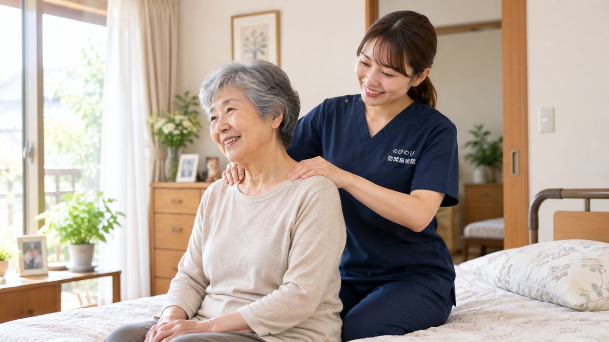

髪をとかそうと腕を上げると肩がズキッとする。上着の袖に手が通らない。夜、肩が痛んで寝返りのたびに目が覚める。豊中市にお住まいで、そんな肩の痛みを我慢したまま、通院そのものも負担になっている方が多くおられます。のびのび訪問施術院は豊中市のご自宅へ伺い、肩や肩甲骨、首まわりのこわばりを和らげ、動かしやすさを保つお手伝いをします。関節の治療そのものは医療機関にお任せし、鍼灸はそれを支える補助という立場です。
要点から。五十肩や肩の痛みは、急に強く痛む時期と、痛みは引いても動かしにくさが残る時期とで、向き合い方が変わります。診断と治療の主役は整形外科などの医療機関で、訪問での鍼灸はその補助にあたります。医師が施術を必要と認め通院がむずかしい状態なら、はり・きゅうが医療保険の対象になり、自己負担は1割の方で1回およそ395円（総額3,950円）が目安です。転倒後の強い痛みや急な腫れ・発熱、力が入らないといったときは、まず整形外科を受診してください。効果には個人差があります。
豊中市で五十肩・肩の痛みにお悩みの方へ
ある朝、髪をとかそうと腕を上げた瞬間に肩へ鋭い痛みが走る。棚の上のものを取ろうとして思わず声が出る。上着の袖に腕を通すのがつらく、背中のファスナーに手が届かない。五十肩（肩関節周囲炎）は、こうした毎日の何気ない動作から少しずつ生活を狭めていきます。豊中市の阪急宝塚線沿線、豊中・岡町・曽根・服部天神のあたりから、大阪モノレールが走る少路や桃山台、千里中央、緑地公園、庄内、上新田まで、私たちのびのび訪問施術院はご自宅までうかがい、肩の状態にあわせた施術と機能訓練を続けています。
「そのうち治るだろう」と我慢を重ねているうちに、肩を動かさない日が増え、かえって固まってしまう方が多くおられます。通院そのものが負担になっている方こそ、住み慣れたお部屋で肩と向き合える訪問という形が力になれると考えています。五十肩全般については五十肩・肩の痛みで腕が上がらない方へもあわせてご覧ください。
五十肩の経過を知り、その時期に合った付き合い方を
五十肩は、痛みの強い急性期、動きが制限される拘縮期、少しずつ動かせるようになる回復期と、時間をかけて表情を変えていきます。ズキズキと痛む急性期に無理に動かせば炎症を長引かせかねませんし、逆に痛みが落ち着いた拘縮期に肩をかばい続ければ、可動域がさらに狭まってしまいます。同じ「肩が痛い」でも、今どの時期にいるかで手のかけ方はまるで違います。
訪問での施術では、その日の肩の熱っぽさや張り、腕の上がり方、後ろへ回した時の引っかかりを確かめながら、無理に動かさない配慮を第一に進めます。急性期には周りの筋肉の緊張をやわらげて夜間痛の負担を軽くすることを、拘縮期以降は動かせる範囲を少しずつ広げ、着替えや洗髪、髪を結ぶといった動作を取り戻していくことを目指します。鍼灸やマッサージは病気そのものを治すものではありませんが、痛みと固さに向き合う日々の支えとしてお役立ていただけます。
夜間痛と、日常動作のつらさをやわらげる
五十肩でとくにこたえるのが、夜、肩がうずいて眠れない夜間痛です。横になると痛む側を下にできず、寝返りのたびに目が覚めてしまう。眠りが浅くなれば日中の疲れも抜けにくくなり、気持ちまで沈みがちになります。訪問では、肩甲骨まわりや腕の付け根の緊張をていねいにゆるめ、少しでも楽な姿勢で休めるよう、クッションの当て方や腕の置き方といった暮らしの工夫もご一緒に考えます。
着替えのときにどの角度で袖を通すと痛みが出にくいか、洗髪や髪を結ぶ動作をどう分けると肩への負担が減るか。可動域を保つための機能訓練も、痛みを見ながら少しずつ組み立てていきます。効き方には個人差がありますので、焦らず、その方のペースを大切にしながら続けていきます。
受診の見きわめと、医療保険での取り扱い
肩を打ったあとの強い痛み、腕がまったく上がらない、しびれや力の入りにくさをともなうといった場合は、五十肩以外の原因が隠れていることもあります。まずは整形外科を受診し、レントゲンなどで肩の状態を確かめていただくことをおすすめします。そのうえで施術が向いていると判断されたときに、私たちが継続的なケアを担わせていただきます。
はり・きゅうの医療保険（療養費）の対象となるのは、神経痛・リウマチ・頸肩腕症候群・五十肩・腰痛症・頸椎捻挫後遺症の6疾病で、五十肩もここに含まれます。ご利用には医師の同意書が必要ですが、要介護認定は必要ありません。介護保険の区分支給限度額とは別枠のため、介護サービスを受けている方も併用いただけます。なお、同一部位について医療保険のリハビリと鍼灸を同じ月に同時算定することはできません。豊中市全域での対応の考え方は豊中市の訪問鍼灸マッサージ、うかがえる範囲は対応エリアはどこまで来てもらえる？でご案内しています。
料金の目安と、豊中市での訪問の流れ
1回の施術総額は3,950円で、医療保険の自己負担割合に応じて、1割の方で約395円が目安です。たとえば週2回のペースで受けられた場合、1割の方なら月あたりおよそ3,160円ほどとお考えいただけます。可動域を保つための機能訓練は施術に含み、対応エリア内であれば出張費はかからず料金は一律です。これらについて別途の料金はいただきません。仕組みや同意書のことをもう少し詳しく知りたい方は料金はいくら？医療保険の自己負担額と仕組みをご覧ください。
岡町や曽根の商店街の近くから、モノレール沿いの少路・桃山台、千里中央の高層住宅にお住まいの方まで、豊中市内であればご自宅の玄関先まで道具を持ってうかがいます。まずはお電話で、いつごろから肩が痛むのか、どんな動作がつらいのかをお聞かせください。あなたの肩の今にあわせて、無理のない一歩をご一緒に見つけていきます。
よくある質問
豊中市にも来てもらえますか？
はい。のびのび訪問施術院は豊中市のほぼ全域に伺います。駅からの距離にかかわらず料金は同じで、別途の出張費もかかりません。まずはお住まいと肩の困りごとをお聞かせください。
五十肩でも医療保険で受けられますか？
肩まわりの慢性的な痛み・こわばりについて医師が施術を必要と認め、通院がむずかしければ、はり・きゅうが医療保険の対象になる場合があります。まずは整形外科などで診てもらい、医師の同意書の手続きは当院が段取りします。
痛くて腕が上がらなくても受けられますか？
はい。炎症の強い時期は無理に動かさず、肩甲骨や首まわりのこわばりを和らげることを中心にします。痛みが落ち着いてきたら、痛くない範囲で動きを保つ機能訓練を少しずつ加えていきます。
夜、肩が痛くて眠れません。何かできますか？
肩まわりを和らげめぐりを整えることで、夜の痛みがやわらぎ休みやすくなる方がいます。寝るときに楽な姿勢やクッションの置き方もお伝えします。効果には個人差があり、痛みが強く続く場合はかかりつけの医師にもご相談ください。
1回いくらかかりますか？
1回の施術は総額3,950円で、自己負担は1割の方で約395円が目安です。月額の目安は1割の方で週2回およそ3,160円。お支払いは月ごとにまとめてで、明細をお渡しします。
介護保険を使っていても利用できますか？
はい。訪問の鍼灸は医療保険で計算し、介護保険の区分支給限度額とは別枠です。ケアマネジャーがついている方は連携しながら進めますので、介護保険のサービスとあわせてご利用いただけます。
要介護認定を受けていなくても受けられますか？
受けられます。訪問の鍼灸は医療保険を使うため、要介護認定がなくても、医師の同意があればご利用いただけます。認定の申請中や非該当の方でも、対象になる場合があります。
家族やケアマネからの相談でも大丈夫ですか？
はい。ご本人はもちろん、ご家族やケアマネジャー、施設のご担当者からのお問い合わせも歓迎しています。お住まいが対応エリアかどうかも含め、電話でお答えします。相談に費用はかかりません。